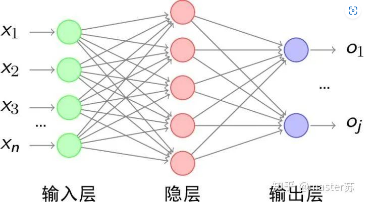
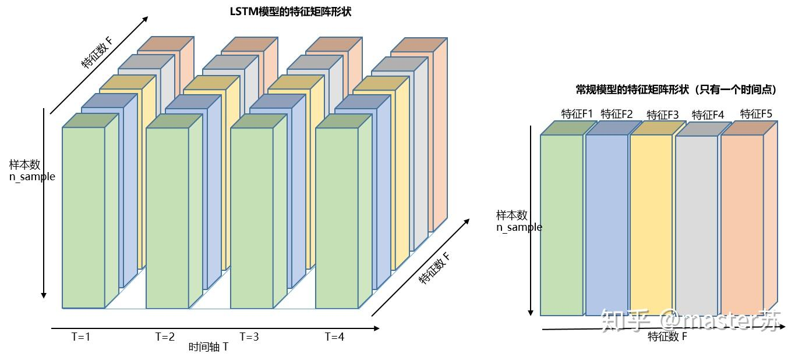
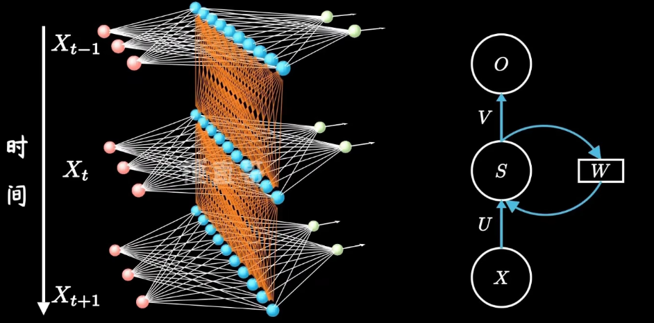
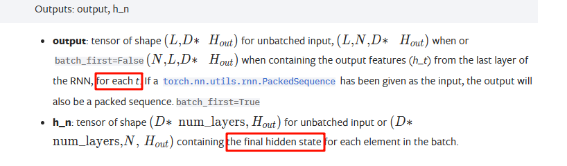
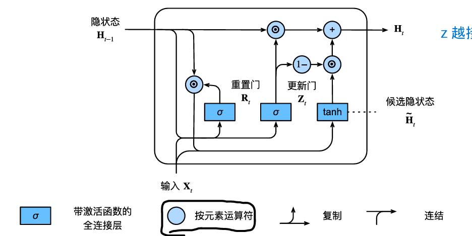
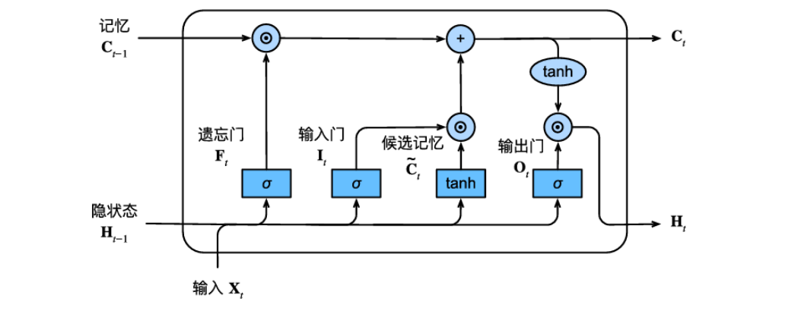
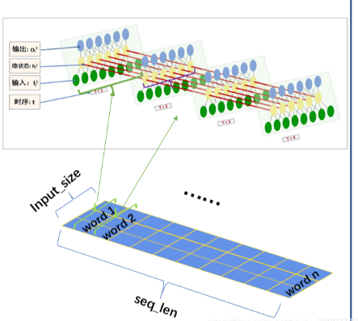
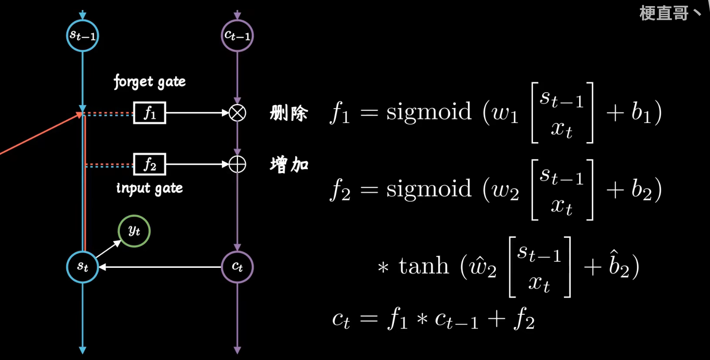
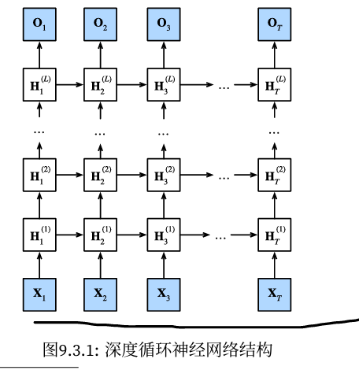
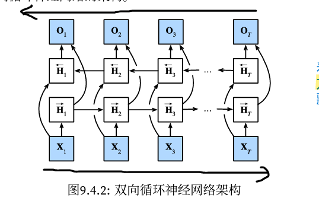

经典RNN梳理
一、前言
学习RNN开始真的尤其不好理解时间步、数据格式等等，因为传统的BP和CNN可以根据图直观理解，比如下面的BP

或者CNN中的卷积层，池化层，全连接层可以用图绘制出来再空间上理解，一层层的叠加，在写代码的时候就按照图搭积木一样，但是RNN因为是序列展开，所以开始有点难理解，输入数据也变的难以理解，但RNN这块的数据都如下图：

二、普通RNN：
2.1 网络结构：

关键理解按照时间这种序列的形式展开，MLP还是原来的MLP只不过给他按照时间展开就成为一个循环，也就是隐状态不断地循环更新，所以也叫循环神经网络
pytorch中RNN模块的输出，output是h_t，每个时刻的容器装在一起，而h_n 是最后一个时刻state,这里跟李沐老师从零开始实现RNN中的output不一样，因为是自己实现的，所以那里的output是真输出的容器，即y = relu(h * w_hq + b_q)的容器，所以使用nn.RNN时需要自己添加一个输出层

而且如果是多层的隐藏层，output里面装的只是最上面一层的ht。
三、GRU:
3.1 门控单元

重置门决定当前的输入和之前隐状态怎么组合生成候选隐状态，如果r=0则不要前一个状态的信息，更多关注当前的输入，r=1则表示保留前一个状态的信息，即重置门决定的是之前状态对当前状态的影响力。
更新门决定当前隐状态要不要更新，或者说更新多少。如果r=1则表示保留之前的隐状态，不会更新太多， 如果r=0则更考虑当前的候选隐状态，即新信息和旧信息的权衡
3.2 作用：
重置门有助于捕捉序列的短期依赖关系
更新门有助于捕捉序列的长期依赖关系
这两感觉是反着的，重置门打开(r=1)则包含基本循环神经网络，就直接按照RNN的计算方式得到候选隐状态；更新门打开(z=1)则跳过一些子序列，因为更新门打开就是跳过了输入，即更新门打开不更新，重置门打开不重置，，，，我理解的重置是reset，在数电中是复位，清零，所以在这里我理解为清除之前的隐状态
四、LSTM:
4.1 门控单元

注意隐藏层的输出是两个(h_t, c_t)，所以初始化也是两个
4.2 核心思想：
为了保持长时间的记忆，增加了一条记忆细胞状态线，这条线可以理解为LSTM时间步信息传输的管道，并且直接在序列中流动，能更好的保持长期信息，受遗忘门和输入门调控
遗忘门：决定哪些记忆细胞里哪些信息被遗忘，哪些继续保存，所以就可以有效的记录很久之前的信息
输入门：决定哪些信息需要添加到记忆细胞中，所以可以避免无关紧要的信息进入记忆
输出门：决定最终隐状态中应该输出哪些信息，也可以说是决定输出记忆细胞里面的哪些信息。
所以总结这三大门的作用都和字面意思相同，按照字面意思去理解他如何解决长期依赖的问题
细胞的状态线被遗忘门和输入门一起调控，所以LSTM能够有选择性的遗忘，更新和保留信息，这样的设计避免普通RNN和GRU中隐状态的频繁更新所带来的信息丢失问题，细胞状态线能够更加稳定的保留重要的长程依赖信息
LSTM中隐状态可以理解是短期记忆，而长期记忆交给记忆线，输出门和当前时刻的记忆C按元素乘法得到最终的输出，可以理解为输出门去决定记忆细胞中哪些可以通过哪些不能通过，或者说决定细胞状态中哪些信息可以影响当前隐状态
4.3 直观理解：

直观的看到按照时间步展开，输入的input_size跟网络的输入层肯定是匹配的，然后就可以多叠几个batch这样
一个精髓：同时保持短期记忆链S和长期记忆链C，并相互更新，实在是妙哉

推荐看这个博主的讲解：LSTM模型结构的可视化 - 知乎 (zhihu.com)
4.4 代码实现：
用torch封装好的，RNN、GRU、LSTM都是直接使用；而且使用的时候都只需要指定输入和隐藏层大小就行，封装好的RNN的output不是真正的输出，是每个时间步隐状态的列表，即[num_step, batch_size, embed_size],如果是多层，output就只会存放最上层的隐状态。
五、深度RNN和双向RNN
深层的结构如下图，只要理解普通RNN，GRU，LSTM，深层结构中的隐状态是流向当前时间步的下一层以及当前隐藏层的下一时间步两个方向，这个也只是简单的把隐藏层的层数叠深，或者改变隐藏层神经元个数等等这些参数，可能带来的效果会更好，训练代价也会上升。

单层双向RNN的结构如下图：关键添加了反向传播信息的隐藏层，所以这就构成了一个双向隐藏层。看图说话：input会输入到两个方向的隐藏层，隐藏层还是按照普通RNN的方式传递隐状态，需要注意反向的隐藏层是ht的隐状态是接受后一时刻ht+1的隐状态，然后将两个反向的隐藏层连接起来输入到输出层(或者下一个双向隐藏层，就是深层RNN嘛)，反向的隐藏层神经元个数也是可以调整的，如果也是h个，连接后为(n, 2h)
主要作用就是结合上下文来预测当前时间步的输出，但是模型的复杂度是很高的，而且不能用在字符级预测模型中，因为在训练中是有上下文的，而在测试的时候是基于当前的上文信息生成下文信息，所以效果就很差
每个时间步的隐状态由当前时间步的前后数据同时决定的，主要是用在序列编码和给定双向上下文的观测估计

六、RNN代码之谈：
在RNN里面时间步的概念是和重要，在做seq2seq的时候，经常都会对输入数据进行维度的转换，或者是要使用一下广播机制，就会碰到我之前不了解的一些函数，本来RNN就学头疼，这样就让我很难受了，但也就这几个，理解过去就好：
6.1 框架下的RNN
一般来说都要输入input， h0，但只输入input也不会报错，默认h0为0了
6.2 repeat方法
repeat:复制函数，手动处理广播机制
1 | repeat：复制函数，在对应的维度上给数字2就表示复制这个维度2份，一般就是用来广播机制： |
6.3 permute方法
transpose和permute函数，都是可以直接交换两个维度，常用于[batch_size, num_step, vocab_size] 和 [num_step, batch_size, vocab_size]互换，这也是写NLP的麻烦点，因为他有时间步的概念
1 | a = torch.ones(2, 3, 4) |
6.4 unsqueeze方法：
在指定的位置插入一个维度，让张量的维度增加，一般是添加一个批处理维度或者通道维度
1 | x = torch.tensor([1, 2, 3, 4]) |
结果：
1 | tensor([[1, 2, 3, 4]]) |
当然，也有压缩回来的的函数:
1 | x = torch.tensor([1, 2, 3, 4]) |
输出
1 | tensor([1, 2, 3, 4]) |
6.5 使用linear
要把实例和抽象类分开，一般在init中实例化一个self.dense = nn.linear(num_hiddens, vocab_size)，输出层一定是vocab_size， 不管这个是字符级的词表还是单词级的词表，最后输出都是在当前概率最大的索引，然后根据索引在词表中找到对应的单词或者字符，一个一个这样的输出连接起来才是最后答案
使用实例对象时，经常输入为RNN的输出即[num_step, batch_size, num_hiddens]，torch框架中要求的是二维张量，且最后一维要和实例化时输入的结点数num_hiddens相同，但实际上只要最后一维和这个线性层的结点个数相同，就能自动把前面转换成一个维度，即[num_step * batch_size， num_hiddens]作为输入，输出结点即vocab_size，然后又会把前面的转换回来，最终输出为[num_step, batch_size, vocab_size]
简单来说：使用线性层不一定要二维，但保证最后一维跟线性层的结点数相同
6.6 嵌入层：
将单词或者短语映射为向量，使得语义上相似的单词在向量空间中位置相近Transformer中的Positional Encoding
transformer中的输入x词向量，以及位置向量都是这个道理，因为使用one-hot编码很稀疏，两个意思相近的乘在一起都为0，用过嵌入的技术，放在一个更稠密向量中，而向量的信息又能表示词与词的关系，或者位置上的关系，
位置向量必须满足：
为每个字输出唯一的编码
不同长度句子之间，任何两个字之间的差值应该保持一致。
他的值应该是有界的
七、注意力机制的缺点
需要的数据量大。因为注意力机制是抓重点信息，忽略不重要的信息，所以数据少的时候，注意力机制效果不如bilstm，现在企业都用注意力机制，因为企业数据都是十万百万级的数据量，用注意力机制就很好。还有传统的lstm，bilstm序列短的时候效果也比注意力机制好。所以注意力机制诞生的原因就是面向现在大数据的时代，企业里面动不动就是百万数据，超长序列，用传统的递归神经网络计算费时还不能并行计算，人工智能很多企业比如极视角现在全换注意力机制了。